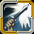
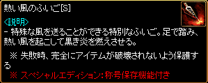

2016年7月21日アップデート

2016年7月21日 アップデートの変更内容一覧
新キャラクター「マスケッティア」実装
新キャラクター「マスケッティア」関連アイテム追加
「マスケッティア」マスタークエスト追加
「マスケッティア」専用インフィニティシリーズ追加
ボスレイドシステム新規追加
既存システム「試練のダンジョン」の改編
不具合修正・仕様変更
不具合
新キャラクター「マスケッティア」実装
マスケッティアは両手に持つ銃と長銃を使い分け、遠距離攻撃やデバフスキルを発動します。

新キャラクター「マスケッティア」関連アイテム追加
マスケッティア専用のセットアイテムと新課金アイテムが追加されました。
マスケッティア専用セットアイテム
| ボスモンスター | Lv | 出現マップ | 湧き時間 | セットアイテム |
|---|---|---|---|---|
| 望楼のオーガ | 65 | ハノブ南側望楼 ２Ｆ | 50分 | 西部の無法者 |
| 女王蜘蛛 | 105 | シーフギルドの倉庫[Ｂ] Ｂ２ | 回避の達人 | |
| 血の剣闘士 | 295 | スウェブタワー ８Ｆ | 5時間38分 | ファイアーマッドネス |
| 森の野獣 | 385 | トラン森南部 | 7時間38分 | 決闘 |
| オーガ覇王 | 450 | スウェブタワー Ｂ１３ | 9時間38分 | 決闘狩人たちの作法 |
| ダークエルフ元帥 | 470 | ダークエルフ王宮への近道 | 10時間38分 | 特異体質 |
| ダークアーチャー | 560 | 名も無き遺跡 Ｂ２ | 11時間45分 | 王国のために |
| ハゲワシ勇者 | 710 | 時の森（3層目） | 12時間50分 | 射撃マエストロ |
新課金アイテム
| アイテム | 価格 | 説明 | |
|---|---|---|---|
| マスケッティア経験値 ブーストバッジ[7日間] |
300GEM |
レベル1〜600までのマスケッティア専用のブーストバッジ。 狩りでの獲得経験値を100％上昇してくれます。 マスケッティア以外で使用しても効果が発揮されません。 ポータル系アイテムと効果が重複されます。 ※「秘密ダンジョン」や「クエスト」で得られるクリア報酬経験値の増加効果はありません。 |
|
| マスケッティア経験値 ブーストバッジ[30日間] |
700GEM | ||
「マスケッティア」マスタークエスト追加
古都ブルンネンシュティグ エイドン（88.63)より、マスケッティアのスキルマスタークエスト不安定な自我を受諾する事ができます。

「マスケッティア」専用インフィニティシリーズ追加
古都ブルンネンシュティグ サナ(98.53）より入手することができます。

ボスレイドシステム新規追加
 |
冒険家協会バー ユスピナ(44.46)にて、レイドボス討伐の参加申請・キャンセルをすることができます。 |
 |
レイドは1週間に1回のみクリア可能。 クリアできなかった場合は、再チャレンジすることができます。 レイドボスは週ごとにランダムで 3種のうち1種が選択されます。 各レイドボスからは低確率で3種の戦利品が出現します。 |
| 戦利品 | レイドマップ | レイドボス | |
|---|---|---|---|
| ケルベロスの牙 | ケルベロス生息地 | ケルベロス | |
| 骸骨王の王冠 | 骸骨王の地下ダンジョン | 骸骨王 | |
| ドラゴートの翼 | ドラゴート出没地 | ドラゴート[POT] | |
戦利品を3種すべて集めると、一流討伐団のバッジと交換することができます。
| アイテム | 詳細 | |
|---|---|---|
|  | 一流討伐団のバッジ | 攻撃速度 +4％ スキルレベル +2 回避率 +2％ ※インベントリに所持しているだけで効果を発揮。 また、バッジ個数にカウントされない。 |
詳細は ⇒ レイドボス
既存システム「試練のダンジョン」の改編
試練のダンジョンの経験値が向上し、クリア褒賞として試練の証が獲得できるようになりました。
ソロ5段階目で終了すると試練の証2個、ソロ10段階・パーティーダンジョンをクリアすると試練の証4個が支給されます。
| 試練のダンジョン クリア経験値 | ||||||
|---|---|---|---|---|---|---|
| Lv | 変更前 | 変更後 | ||||
| ソロ5段階 | ソロ10段階 /パーティー |
ソロ5段階 | ソロ5段階 経験の書 有 |
ソロ10段階 /パーティー |
ソロ10段階 /パーティー 経験の書 有 |
|
| 400〜449 | 800万 | 2500万 | 1000万 | 1500万 | 2500万 | 3750万 |
| 450〜499 | 900万 | 2800万 | 1120万 | 1680万 | 2800万 | 4200万 |
| 500〜549 | 1100万 | 3300万 | 1320万 | 1980万 | 3300万 | 4950万 |
| 550〜599 | 1200万 | 3700万 | 1480万 | 2220万 | 3700万 | 5550万 |
| 600〜649 | 1100万 | 3500万 | 1800万 | 2700万 | 4500万 | 6750万 |
| 650〜699 | 500万 | 1500万 | 2200万 | 3300万 | 5500万 | 8250万 |
| 700〜749 | 280万 | 860万 | 2640万 | 3960万 | 6600万 | 9900万 |
| 750〜799 | 200万 | 610万 | 3120万 | 4680万 | 7800万 | 1億1700万 |
| 800〜849 | 80万 | 240万 | 3600万 | 5400万 | 9000万 | 1億3500万 |
| 850〜899 | 80万 | 240万 | 4800万 | 7200万 | 1億2000万 | 1億8000万 |
| 900〜999 | 80万 | 240万 | 8000万 | 1億2000万 | 2億 | 4億5000万 |
変更点
・報酬経験値は1日2回のみ獲得可能です。3回目以降は試練の証のみで、経験値はなしとなります。
（コスミックシリーズを所持している場合は、1回分追加）
・毎日0時に回数が初期化されます。
・経験値獲得褒賞は、ポータル系アイテムの効果が適用されます。
・パーティーダンジョンの経験値獲得方式は、リーダーの受け取りからキャラクター個別受け取りに変更されました。
 |
獲得した試練の証は スタイン邸宅 フォル・スタイン(9.9)にて |
 |
様々なアイテムと交換することができます。 |
| アイテム | 説明 | ||
|---|---|---|---|
| スタイン家の抵抗力ポーション 3個 |
- 取引不可アイテム - 90秒間、全ての状態異常 抵抗 ※試練のダンジョン内でのみ使用可能。 |
1個 | |
| スタイン家の栄養剤 3個 |
- 取引不可アイテム - 1分の間、CPがいつも最高に維持される。 ※試練のダンジョン内でのみ使用可能。 |
1個 | |
| 試練のダンジョン経験の書 | 所持時、試練のダンジョン完了経験値、褒賞を増加させてくれる。 | 6個 | |
| 異界の強化石 | 深淵の黒曜石を削って磨き上げた強化石。装備の能力を向上させるために使用する。衝撃に大変弱いので、予感には注意が必要。 ※取引不可 |
50個 | |
| 試練のリング[挑戦Lv1] | <基本情報> - 取引不可アイテム - 装備数制限(0/1) - 刻印レベル 1 - 力 13増加 - 知識 13増加 - 魔法抵抗 +5％ <要求能力値> レベル 400 |
170個 （または、 試練のリング 交換チケット） |
|
| 忍耐のクリスタル | - 取引不可アイテム 力を失った試練のリングを復元できる水晶。使用時、リングを再び使用できる。 |
200個 | |
試練のリング[挑戦Lv1]は、刻印Lv15になると試練のリング[勇気Lv15]になります。
強化に失敗すると、力を失った 試練のリングに変更されます。
| アイテム | 詳細 | |
|---|---|---|
| 試練のリング[勇気Lv15] | <基本情報> - 取引不可アイテム - 装備数制限(0/1) - 刻印レベル 15 - 力 55増加 - 知識 55増加 - 魔法抵抗 +5％ - 狩りでの獲得経験値 5％増加 - 魔法抵抗 +15％ <要求能力値> レベル 400 |
|
詳細は ⇒ 試練のダンジョン 試練のリング強化オプション
不具合修正・仕様変更
・保護したユニークアイテムに「アイテム再構成の魔法書」が使用できた不具合修正。
・ブラックファイアー強化能力を除外する際、除外不可のアイテムがアクティブ状態で表示されていた不具合修正。
・ブラックファイヤー装備強化オプション「魔法ダメージ増加」、「与えた魔法ダメージHP吸収」、「強打率」、「ポーション回復速度」が発動する様に修正。
・ブラックファイアー装備強化オプション「力」が、能力値の数値に反映される様に修正。
・黒魔術師のスキル「ダークエンチャント」の付加ダメージが一定の数値を超えると、正常にスキルを付与できなくる不具合修正。
・通常インベントリと追加インベントリで、BOXアイテムを開封する時のモーションが異なっていた不具合修正。
・「マーズ・ルガスの秘密基地」で「ジョン・マルコのお守り」を使用すると、秘密ダンジョンクリア前に効果が発揮されていた不具合修正。
・プリンセスのスキル「武器変身」で生成されたアイテムのダメージが正常に反映されない不具合修正。
・特定のパーティーボスモンスターのリポップ時間が異なっていた不具合修正。
・試練のダンジョンで10番目「荒廃の群れ」が出現すると進行不可能になる不具合修正。
・ニックネームの字体、大きさが変更されました。
・ふいごアイテムのアイコンが一部変更されました。
 |
 |
| 変更前 | 変更後 |
不具合
・マスケッティアの「魔弾石」系アイテムに、ブラックファイアー装備強化が行えてしまいます。
⇒2016年7月29日メンテナンスにて修正完了
・1週間に1度のみクリア可能なレイドが、複数回入場し褒賞を受けられる場合があります。
⇒2016年7月29日メンテナンスにて一時修正
・「試練のリング」と「希望の指輪」を同時に装備することができません。
⇒2016年7月29日メンテナンスにて修正完了
・ギルドダンジョンB9で「インフィニティマスケッティア」がドロップしません。
⇒2016年7月29日メンテナンスにて修正完了
・「忍耐のクリスタル」を使用時、システムメッセージが正常に表示されません。
⇒2016年7月29日メンテナンスにて修正完了
・「試練のダンジョン」完了時、「経験の書」がもらえてしまう場合があります。
⇒2016年7月29日メンテナンスにて修正完了